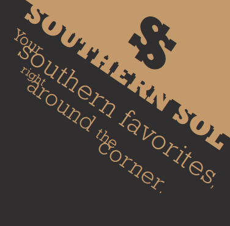
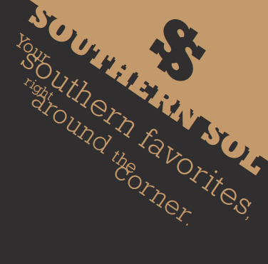

Designing for Dining
This project was centered around restaurant branding and promotion, where I was to create a poster, menu and social media posts for a restaurant's grand-opening fitting the guidelines, 'Southern comfort food, New York based, family style, and with only typography as the design element'. Based on this, I came up with my restaurant concept, 'Southern Sol', a restaurant that serves southern comfort food in a family-style setting, with a focus on bringing people in New York together through familiar food.
Ideation


The sketching process was largely grid-focused, as I looked to create a cohesive design system across the three deliverables, with the poster and social media posts being more closely linked and the menu being more individual in its layout. I looked to visualise as many concepts as I could to have a wide range of options to choose from, before experimenting with typefaces, of which I was limited to only two across the entire design system. Based on the Southern focus of the restaurant, I picked the bold slab serif, Rockwell, which I used to create the restaurant lettermark mimicking a horse shoe. To compliment the boldness of the slab, I chose a more neutral sans serif, Univers, to use for the body text and smaller details. The colour scheme was based on the warmth and comfort of the cuisine and emotional appeal of the family-style restaurant, focusing on earthy tones like deep red, pale burnt yellow and dark gray.
Poster Concepts
Social Media Concepts

Restaurant Poster

Restaurant Menu
Social Media Posts
 
